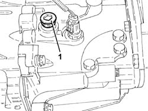
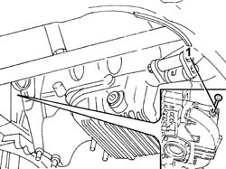

2110A04 Manual gearbox and differential OIL - Check level and top up, if necessary
- Path
- Procedures > 21 GEARBOX > 2110 MANUAL GEARBOX AND DIFFERENTIAL > 2110A manual gearbox and differential assembly > 2110A04 Manual gearbox and differential OIL - Check level and top up, if necessary
- Kind
- repair procedure (removal / refitting; the operation number is the code)
- Applies to
- engines: 1.6 TS, 2.0 TS, 1.9 JTD 8V; all production periods
- Interactive page
- https://sloeber94.github.io/elrnDB-a147/en/#/3025120
Applies to: engines: 1.6 TS, 2.0 TS; all production periods
.
Position the vehicle on the ramp.
Applies to: engines: 2.0 TS; all production periods
Proceed with removal 7055B54 under-engine guard - r r .
Applies to: engines: 1.6 TS, 2.0 TS; all production periods
1. Remove the filler plug from the gearbox casing and check that the level of the fluid reaches the lower edge of the filler opening.

Applies to: engines: 1.6 TS, 2.0 TS; all production periods
If necessary, top up the level, using the recommended fluid, through the filler opening.
 | Type | Component | Name | Qty. |
|---|---|---|---|---|
- | Oli [l] | ENGINE LUBRICATION CIRCUIT | TUTELA CAR ZC 75 SYNTH | 2.1 |
Clean the filler plug and tighten it to the recommended torque.
 | Fastening | Component | Ø | Value (daNm) |
|---|---|---|---|---|
- | - | - | - | - |
Applies to: engines: 2.0 TS; all production periods
Proceed with refitting 7055B54 under-engine guard - r r .
Applies to: engines: 1.6 TS, 2.0 TS; all production periods
Remove the car from the ramps.
Applies to: engines: 1.9 JTD 8V; all production periods
Position the vehicle on the ramp.
7055B54 under-engine guard - r r .
1. Using the dipstick, check that the level of the transmission fluid for the manual gearbox and differential coincides with the reference on the dipstick.
If necessary, top up the level using the recommended fluid, through the dipstick seating.
| Type | Component | Name | Qty. |
|---|---|---|---|---|
- | Oli [l] | ENGINE LUBRICATION CIRCUIT | TUTELA CAR ZC 75 SYNTH | 2.1 |

Applies to: engines: 1.9 JTD 8V; all production periods
Check the level of the fluid once again, then return the dipstick.
7055B54 under-engine guard - r r .
Remove the car from the ramps.
Topics linked from this page (1)
Topics that link to this page (21)
- S22 NOISE' GEARBOX / IN NEUTRAL
- X15 GEARBOX/DIFFERENTIAL OIL LEAKS
- 0010K80 80,000km service coupon - emission control versions
- 0010M60 160,000km service coupon - emission control versions
- 0010T41 MANUAL GEARBOX OIL - Check level and top up, if necessary
- 1004D10 power unit (manual gearbox), removed, remove and re-build
- 1020D36 flywheel end oil seal - replace for manual gearbox with hydraulic selection versions
- 1020D38 flywheel side oil seal - replace
- 1024B10 engine flywheel - r + r for versions with manual gearbox
- 1024B11 engine flywheel - r r for manual gearbox with hydraulic selection versions
- 1810A20 clutch - r + r
- 1810A28 clutch - r r for manual gearbox with hydraulic selection versions
- 1820A24 thrust bearing linkage - r + r
- 1820B30 OPERATING CYLINDER/CLUTCH HYDRAULIC ACTUATOR - R.R.
- 2110A10 manual gearbox and differential - r + r
- 2110A11 manual gearbox with differential - r r for versions with hydraulic selection
- 2110C22 gear input shaft seals - r r
- 2110C24 seals for gearbox input shaft - r r for manual gearbox with hydraulic selection versions
- 2110D52 l/h flange on differential - r + r with drive shaft removed
- 2110D53 left hand flange on differential - r+r
- 2110D74 differential l/h inner drive shaft - r + r